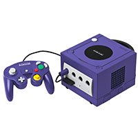

ESTRUTURA
Dimensões 150 x 110 x 161 mm
Peso 2.4 kg
PLATAFORMA
Sistema operacional Dolphin OS processador customizado de 128-bits
CPU 128 bit – IBM PowerPc Gekko @ 485 MHz
GPU ArtX Flipper suportando de 6 a 12 milhões de polígonos
MEMÓRIA
interna 250 MB (variável)
RAM 512 MB GDDR3
CONEXÕES
Portas 4 entradas para controle, 2 para memory card, portas de vídeo analógico e digital, entrada para alimentação externa, 2 portas em série e uma em paralelo
CONTEÚDO DA EMBALAGEM
Direcionais + 7 botões + Start + 2 analógicos
ESPECIFICAÇÕES
Consumo de energia 155.7 watts (originalmente), 93.7 watts (a partir de 2008)
Resolução 480p
Voltagem 100-240 V CA, 50/60 Hz
